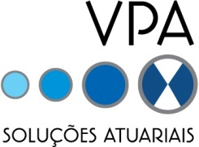

INSCRIÇÕES
O Encontro Nacional de Estudantes de Atuária surgiu em 2002, organizado por alunos da Universidade Federal de Minas Gerais.
Sua segunda edição aconteceu em 2005, também na UFMG.
Após 13 anos, a Liga de Ciências Atuariais organizou novamente o Encontro Nacional de Estudantes de Atuária, agora em sua terceira edição. Foram 5 dias de atividades intensas na Universidade Federal de Alfenas - Campus Avançado de Varginha.
Este ano, a LCA está trabalhando para que a quarta edição do ENEAT seja um sucesso.
Serão 3 dias de muita troca de conhecimento e inovação na cidade do Rio de janeiro.
Nos vemos nos dias 26, 27 e 28 de setembro!
LOCAL E DATA
O IV Encontro Nacional de Estudantes de Atuária será realizado nos dias 26, 27 e 28 de setembro de 2019 no Auditório Professor Carlos Alberto Del Castillo no edifício Rio Datacentro da Pontifícia Universidade Católica do Rio de Janeiro, na Rua Marquês de São Vicente, 225, Gávea - Rio de janeiro, RJ.
PATROCINADORES

COTA DIAMANTE
COTA OURO
COTA PRATA

COTA BRONZE

APOIO
SEJA UM PATROCINADOR
Se interessou pelo evento? Deseja ser um patrocinador? Entre em contato com nosso setor financeiro pelo e-mail financas.lca@gmail.com para mais informações!
FALE CONOSCO
Dúvidas e sugestões? Entre em contato conosco!
LIGA DE CIÊNCIAS ATUARIAIS
Av. Celina Ferreira Ottoni, 4000, Sala D 402-C
Padre Vitor - Varginha/MG
CEP: 37048-395